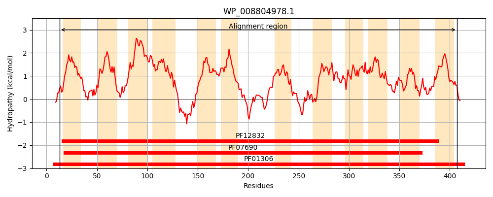
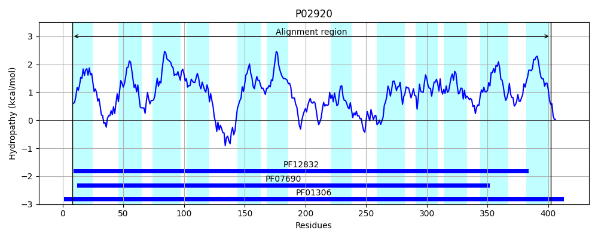
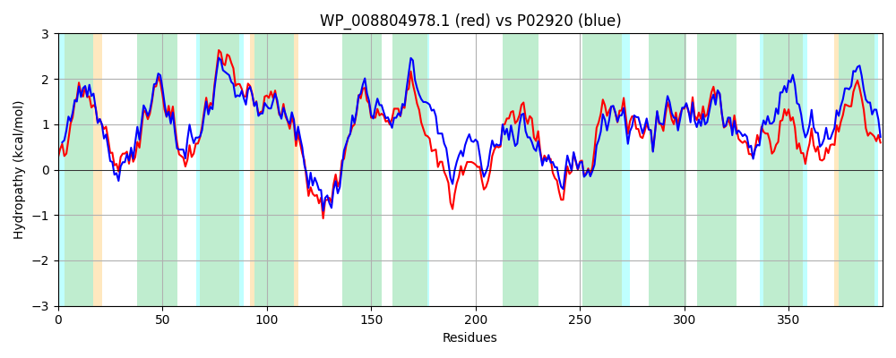

Hit Accession: P02920
Hit TCID: 2.A.1.5.1
Hit Description: gnl|BL_ORD_ID|8232 gnl|TC-DB|P02920|2.A.1.5.1 Lactose permease (Lactose-proton symport) - Escherichia coli.
Mach Len: 395
e:0.000000
Query TMS Count : 12
Hit TMS Count: 12
TMS-Overlap Score: 11.400000
Predicted Substrates:CHEBI:17306;maltose, CHEBI:28053;melibiose, CHEBI:17716;lactose, CHEBI:17992;sucrose, CHEBI:546840;4-nitrophenyl alpha-D-galactoside, CHEBI:355715;4-nitrophenyl-beta-D-galactoside, CHEBI:17540;methyl beta-D-galactoside
BLAST Alignment:
Score: 1339 , Bit scores: 520 bits, E-value: 0.0e+00, Alignment length: 395, Percentage identity: 62
Query: 13 NFVYFLLFFFFYYFIMSAYFPFFPVWLADVNHLTKTETGIVFSSISLFAIIFQPVFGLMSDKLGLRKHLLWTITVLLILFAPFFIFVFSPLLQMNIIAGALAGGIYLGIVFSSGSGAVEAYIERVSRANRFEYGKVRVAGCVGWALCASITGVLFGIDPNITFWIASGFALVLGLLLWLSRPESSNSAEVIEALGANRQAFSLRTAAELLRMPRFWGFIVYVIGVASVYDVFDQQFANFFKSFFASPQRGTEVFGFVTTGGELLNALIMFCAPAIVNRIGAKNALLTAGMIMSVRILGSSFASSAVEVVILKMLHMFEIPFLLVGTFKYISSAFNPRLSATLFLIGFNLSKQLSGVVLSAWVGRMYDTVGFHQAYLILGCITLSFTLLSFFTLRG 407
NF F LFFFFY+FIM AYFPFFP+WL D+NH++K++TGI+F++ISLF+++FQP+FGL+SDKLGLRK+LLW IT +L++FAPFFIF+F PLLQ NI+ G++ GGIYLG F++G+ AVEA+IE+VSR + FE+G+ R+ GCVGWALCASI G++F I+ FW+ SG AL+L +LL+ ++ ++ +SA V A+GAN AFSL+ A EL R P+ W +YVIGV+ YDVFDQQFANFF SFFA+ ++GT VFG+VTT GELLNA IMF AP I+NRIG KNALL AG IMSVRI+GSSFA+SA+EVVILK LHMFE+PFLLVG FKYI+S F R SAT++L+ F KQL+ + +S G MY+++GF AYL+LG + L FTL+S FTL G
Sbjct: 8 NFWMFGLFFFFYFFIMGAYFPFFPIWLHDINHISKSDTGIIFAAISLFSLLFQPLFGLLSDKLGLRKYLLWIITGMLVMFAPFFIFIFGPLLQYNILVGSIVGGIYLGFCFNAGAPAVEAFIEKVSRRSNFEFGRARMFGCVGWALCASIVGIMFTINNQFVFWLGSGCALILAVLLFFAKTDAPSSATVANAVGANHSAFSLKLALELFRQPKLWFLSLYVIGVSCTYDVFDQQFANFFTSFFATGEQGTRVFGYVTTMGELLNASIMFFAPLIINRIGGKNALLLAGTIMSVRIIGSSFATSALEVVILKTLHMFEVPFLLVGCFKYITSQFEVRFSATIYLVCFCFFKQLAMIFMSVLAGNMYESIGFQGAYLVLGLVALGFTLISVFTLSG 402 | Protein Hydropathy Plots: |
|---|
|  |  |
Pairwise Alignment-Hydropathy Plot:
|
|---|
|  |